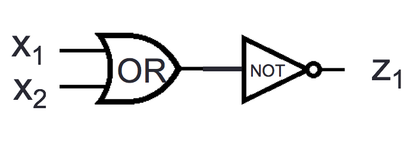
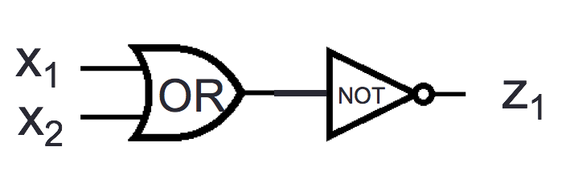

Monday January 25
| Logical equivalence |
Two compound propositions are logically equivalent means that they have the same truth values for all settings of truth values to their propositional variables. |
|
| Tautology |
A compound proposition that evaluates to true for all settings of truth values to its propositional variables; it is abbreviated \(T\). |
|
| Contradiction |
A compound proposition that evaluates to false for all settings of truth values to its propositional variables; it is abbreviated \(F\). |
|
| Contingency |
A compound proposition that is neither a tautology nor a contradiction. |
|
Can replace \(p\) and \(q\) with any compound proposition Definition: A collection of compound propositions is called consistent if there is an assignment of truth values to the propositional variables that makes each of the compound propositions true. Consistency:
Whenever the system software is being upgraded, users cannot access the file system. If users can access the file system, then they can save new files. If users cannot save new files, then the system software is not being upgraded.
Translate to symbolic compound propositions
Look for some truth assignment to the propositional variables for which all the compound propositions output \(T\)
Definition A compound proposition is in disjunctive normal form (DNF) means that it is an OR of ANDs of variables and their negations.
Definition A compound proposition is in conjunctive normal form (CNF) means that it is an AND of ORs of variables and their negations.
Extra example: A compound proposition that gives output ? is:
Review
Consider the logic circuit
For which of the following settings(s) of input values is the output \(y_1 = 0\)? (Select all and only those that apply.)
\(x_1 = 0\), \(x_2 = 0\), \(x_3 = 0\), and \(x_4 = 0\)
\(x_1 = 1\), \(x_2 = 1\), \(x_3 = 1\), and \(x_4 = 1\)
\(x_1 = 1\), \(x_2 = 0\), \(x_3 = 0\), and \(x_4 = 1\)
\(x_1 = 0\), \(x_2 = 0\), \(x_3 = 1\), and \(x_4 = 1\)
Consider the logic circuits
 

For which of the following settings(s) of input values do the outputs of these circuits have the same value, i.e. \(y_1 = z_1\)? (Select all and only those that apply.)
\(x_1 = 1\), \(x_2 = 1\)
\(x_1 = 1\), \(x_2 = 0\)
\(x_1 = 0\), \(x_2 = 1\)
\(x_1 = 0\), \(x_2 = 0\)
For each of the following propositions, indicate exactly one of:
There is no assignment of truth values to its variables that makes it true,
There is exactly one assignment of truth values to its variables that makes it true, or
There are exactly two assignments of truth values to its variables that make it true, or
There are exactly three assignments of truth values to its variables that make it true, or
All assignments of truth values to its variables make it true.
\(x \land y \land (x \lor y)\)
\(\lnot x \land y \land (x \lor y)\)
\(x \land \lnot y \land (x \land y)\)
\(\lnot x \land (y \lor \lnot y)\)
\(x \land (y \lor \lnot x)\)
Friday January 22
The only way to make the conditional statement \(p \to q\) false is to
| The hypothesis of \(p \to q\) is |
|
The antecedent of \(p \to q\) is |
|
|
|
|
|
| The conclusion of \(p \to q\) is |
|
The consequent of \(p \to q\) is |
|
|
|
|
|
| Input |
Output |
|
|
Conjunction |
Exclusive or |
Disjunction |
Conditional |
Biconditional |
| \(p\) |
\(q\) |
\(p \wedge q\) |
\(p \oplus q\) |
\(p \vee q\) |
\(p \to q\) |
\(p \leftrightarrow q\) |
| \(T\) |
\(T\) |
\(T\) |
\(F\) |
\(T\) |
\(T\) |
\(T\) |
| \(T\) |
\(F\) |
\(F\) |
\(T\) |
\(T\) |
\(F\) |
\(F\) |
| \(F\) |
\(T\) |
\(F\) |
\(T\) |
\(T\) |
\(T\) |
\(F\) |
| \(F\) |
\(F\) |
\(F\) |
\(F\) |
\(F\) |
\(T\) |
\(T\) |
Examples
\(p \to q \equiv \lnot p \lor q\) because
\(p \leftrightarrow q\) is not logically equivalent to \(p \land q\) because
\(\lnot( p \leftrightarrow q) \equiv p \oplus q\) because
\(p \to q\) is not logically equivalent to \(q \to p\) because
\(p \leftrightarrow q \equiv q \leftrightarrow p\) because
| The converse of \(p \to q\) is |
|
|
|
| The inverse of \(p \to q\) is |
|
|
|
| The contrapositive of \(p \to q\) is |
|
Which of these is logically equivalent to \(p \to q\)?
Translation: Express each of the following sentences as compound propositions, using the given propositions.
2 “A sufficient condition for the warranty to be good is that you bought the computer less than a year ago" \[\begin{aligned}
w &\text{ is ``the warranty is good"} \\
b &\text{ is ``you bought the computer less than a year ago"} \\\end{aligned}\]
2 “Whenever the message was sent from an unknown system, it is scanned for viruses." \[\begin{aligned}
s &\text{ is ``The message is scanned for viruses"} \\
u &\text{ is ``The message was sent from an unknown system"} \\\end{aligned}\]
2 “I will complete my to-do list only if I put a reminder in my calendar" \[\begin{aligned}
r &\text{ is ``I will complete my to-do list"} \\
c &\text{ is ``I put a reminder in my calendar"} \\\end{aligned}\]
Review
For each of the following propositions, indicate exactly one of:
There is no assignment of truth values to its variables that makes it true,
There is exactly one assignment of truth values to its variables that makes it true, or
There are exactly two assignments of truth values to its variables that make it true, or
There are exactly three assignments of truth values to its variables that make it true, or
All assignments of truth values to its variables make it true.
\((p \leftrightarrow q) \oplus (p \land q)\)
\((p \to q) \vee (q \to p)\)
\((p \to q) \land (q \to p)\)
\(\lnot (p \to q)\)
Definition: A collection of compound propositions is called consistent if there is an assignment of truth values to the propositional variables that makes each of the compound propositions true.
For each of the following system specifications, identify the compound propositions that give their translations to logic and then determine if the translated collection of compound propositions is consistent.
Specification: If the computer is out of memory, then network connectivity is unreliable. No disk errors can occur when the computer is out of memory. Disk errors only occur when network connectivity is unreliable.
Translation: \(M =\) “the computer is out of memory"; \(N =\) “network connectivity is unreliable"; \(D =\) “disk errors can occur".
\[\begin{aligned}
&\neg M \to N \\ & \neg D \to M \\ & D \to N \end{aligned}\]
\[\begin{aligned}
&M \to \neg N \\ & \neg D \wedge M \\ & N \to D \end{aligned}\]
\[\begin{aligned}
&M \to N \\ & M \to \neg D \\ & \neg N \to \neg D \end{aligned}\]
Specification: Whether you think you can, or you think you can’t - you’re right.
Translation: \(T =\) “you think you can"; \(C =\) “you can".
\[\begin{aligned}
&T \to C \\& \neg T \to \neg C \end{aligned}\]
\[\begin{aligned}
&T \wedge C \\ & \neg T \wedge \neg C \end{aligned}\]
\[\begin{aligned}
&T \to \neg T \\ & C \to \neg C \end{aligned}\]
Specification: A secure password must be private and complicated. If a password is complicated then it will be hard to remember. People write down hard-to-remember passwords. If a password is written down, it’s not private. The password is secure.
Translation: \(S =\) “the password is secure"; \(P =\) “the password is private"; \(C =\) “the password is complicated"; \(H =\) “the password is hard to remember"; \(W =\) “the password is written down".
\[\begin{aligned}
&\neg (P \wedge C) \to \neg S \\ & C \to H \\ & W \wedge H \\ & W \to \neg P \\ & S \end{aligned}\]
\[\begin{aligned}
&(P \wedge C) \to S \\ & C \to H\\ & W \to H \\ & W \to P \\ & S\end{aligned}\]
\[\begin{aligned}
& S \to (P \wedge C) \\ & C \to H\\ & H \to W \\ & W \to \neg P \\ & S\end{aligned}\]